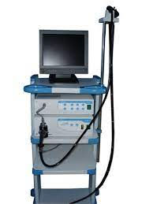
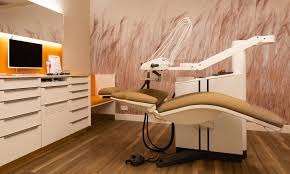

24 Hrs Laboratory service

our Laboratory Services provides a comprehensive range of diagnostic testing including Covid-19 testing 24 hours a day, 7 days per week.
Video Endoscopy
We offer modern Videoscopy, Endoscopy and Colonoscopy treatments. Amin General Hospital is the most trusted medical center for stomach, intestine, and abdominal treatment. You don't need to travel abroad to receive these treatments. treatment.
Emergency and Critical Care

Amin General Hospital’s advanced trauma and emergency medical team cares about your health—and values your time— so you won’t wait long to see a doctor… and can leave feeling better, sooner.
General surgery
The department of surgery is set up to provide up-to-date general surgical service and specialty surgical care. It has modern fully equipped operating theatre and recovery unit. Post-operative ICU care also available 24Hrs. The patient care and supervision is provided by experienced surgeons and trained, dedicated nursing staff. Safety and excellence is assured in every procedure.
Dental Service
Among our dental services Crowns and Bridges, Dentures, Grafts, Excessive or Uneven Gums, Implants, Veneers, Whitening, Hospital Dentistry, Orthodontics, Periodontics, Emergency dental care, Preventive dentistry, Oral surgery, Pediatric Specialty Care, and many more